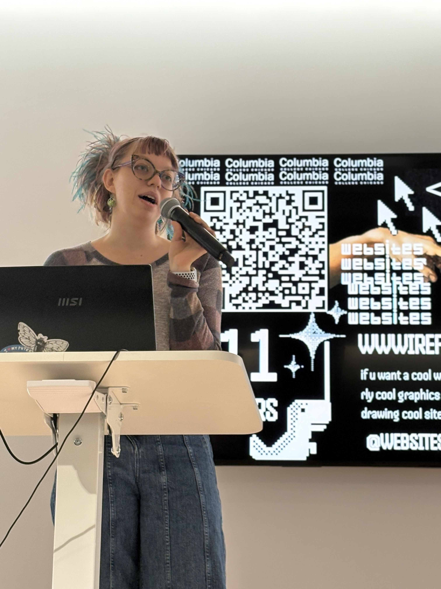

I'm an interdisciplinary software developer focused on building tools for real-world environments.
In my final year studying Computer Science (Class of 2027), I specialize in full-stack web development with an emphasis on practical, user-centered solutions. My work sits at the intersection of technology and the arts given that most of my experience is building technology for the arts :)
My most notable project, Backstage, is an inventory and operations management system developed for the Chicago International Puppet Theater Festival. Through this, I've gained experience designing systems that support live events, handling real-world constraints like inventory tracking, usability under pressure, and clean data workflows.
I enjoy building applications that are both functional and engaging, such as CRUD systems or web-hosted experiences. My projects reflect a balance between technical execution and creative problem-solving.
Technically, I work with modern web technologies including JavaScript, C#, SQL, and frameworks for building responsive, data-driven applications. I'm continuously refining my skills in full-stack development, with a growing focus on scalable architecture and clean UI/UX.
I'm currently seeking in person or hybrid internship and junior developer opportunities where I can contribute to meaningful products that raise my standards of software development. Namely, I have a strong interest in the compliance sector. I am actively seeking roles in compliance, EMS management, and other related data-driven coding environments.
Linkedin: View Profile
GitHub: View Profile